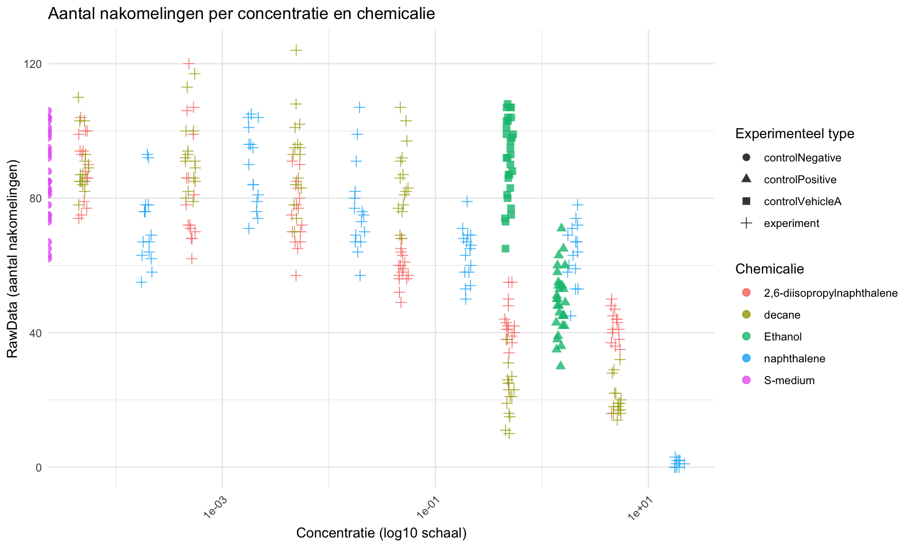

4 Inleiding
In deze analyse wordt data onderzocht afkomstig van het HU lectoraat Innovative Testing in Life Sciences & Chemistry. In het experiment zijn C. elegans blootgesteld aan verschillende concentraties van verschillende chemicaliën. Vervolgens is het aantal nakomelingen bepaald. Het doel van deze analyse is om de data reproduceerbaar te verwerken en te visualiseren in R.
#controle Eerste controleren of data goed is ingelezen
## plateRow plateColumn vialNr dropCode expType expReplicate expName
## 1 NA NA 1 a experiment 3 CE.LIQ.FLOW.062
## 2 NA NA 1 b experiment 3 CE.LIQ.FLOW.062
## 3 NA NA 1 c experiment 3 CE.LIQ.FLOW.062
## 4 NA NA 1 d experiment 3 CE.LIQ.FLOW.062
## 5 NA NA 1 e experiment 3 CE.LIQ.FLOW.062
## 6 NA NA 2 a experiment 3 CE.LIQ.FLOW.062
## expDate expResearcher expTime expUnit expVolumeCounted
## 1 2020-11-30 Sergio Reijnders - Ellis Herder 68 hour 50
## 2 2020-11-30 Sergio Reijnders - Ellis Herder 68 hour 50
## 3 2020-11-30 Sergio Reijnders - Ellis Herder 68 hour 50
## 4 2020-11-30 Sergio Reijnders - Ellis Herder 68 hour 50
## 5 2020-11-30 Sergio Reijnders - Ellis Herder 68 hour 50
## 6 2020-11-30 Sergio Reijnders - Ellis Herder 68 hour 50
## RawData compCASRN compName compConcentration compUnit
## 1 44 24157-81-1 2,6-diisopropylnaphthalene 4.99 nM
## 2 37 24157-81-1 2,6-diisopropylnaphthalene 4.99 nM
## 3 45 24157-81-1 2,6-diisopropylnaphthalene 4.99 nM
## 4 47 24157-81-1 2,6-diisopropylnaphthalene 4.99 nM
## 5 41 24157-81-1 2,6-diisopropylnaphthalene 4.99 nM
## 6 35 24157-81-1 2,6-diisopropylnaphthalene 4.99 nM
## compDelivery compVehicle elegansStrain elegansInput bacterialStrain
## 1 Liquid controlVehicleA N2 25 OP50
## 2 Liquid controlVehicleA N2 25 OP50
## 3 Liquid controlVehicleA N2 25 OP50
## 4 Liquid controlVehicleA N2 25 OP50
## 5 Liquid controlVehicleA N2 25 OP50
## 6 Liquid controlVehicleA N2 25 OP50
## bacterialTreatment bacterialOD600 bacterialConcX bacterialVolume
## 1 heated 0.743 8 300
## 2 heated 0.743 8 300
## 3 heated 0.743 8 300
## 4 heated 0.743 8 300
## 5 heated 0.743 8 300
## 6 heated 0.743 8 300
## bacterialVolUnit incubationVial incubationVolume incubationUnit
## 1 ul 1,5 glass vial 1000 ul
## 2 ul 1,5 glass vial 1000 ul
## 3 ul 1,5 glass vial 1000 ul
## 4 ul 1,5 glass vial 1000 ul
## 5 ul 1,5 glass vial 1000 ul
## 6 ul 1,5 glass vial 1000 ul
## incubationMethod incubationRPM bubble incubateTemperature
## 1 rockroll 35 NA 20
## 2 rockroll 35 NA 20
## 3 rockroll 35 NA 20
## 4 rockroll 35 NA 20
## 5 rockroll 35 NA 20
## 6 rockroll 35 NA 20## 'data.frame': 360 obs. of 34 variables:
## $ plateRow : logi NA NA NA NA NA NA ...
## $ plateColumn : logi NA NA NA NA NA NA ...
## $ vialNr : int 1 1 1 1 1 2 2 2 2 2 ...
## $ dropCode : chr "a" "b" "c" "d" ...
## $ expType : chr "experiment" "experiment" "experiment" "experiment" ...
## $ expReplicate : int 3 3 3 3 3 3 3 3 3 3 ...
## $ expName : chr "CE.LIQ.FLOW.062" "CE.LIQ.FLOW.062" "CE.LIQ.FLOW.062" "CE.LIQ.FLOW.062" ...
## $ expDate : chr "2020-11-30" "2020-11-30" "2020-11-30" "2020-11-30" ...
## $ expResearcher : chr "Sergio Reijnders - Ellis Herder" "Sergio Reijnders - Ellis Herder" "Sergio Reijnders - Ellis Herder" "Sergio Reijnders - Ellis Herder" ...
## $ expTime : int 68 68 68 68 68 68 68 68 68 68 ...
## $ expUnit : chr "hour" "hour" "hour" "hour" ...
## $ expVolumeCounted : int 50 50 50 50 50 50 50 50 50 50 ...
## $ RawData : int 44 37 45 47 41 35 41 36 40 38 ...
## $ compCASRN : chr "24157-81-1" "24157-81-1" "24157-81-1" "24157-81-1" ...
## $ compName : chr "2,6-diisopropylnaphthalene" "2,6-diisopropylnaphthalene" "2,6-diisopropylnaphthalene" "2,6-diisopropylnaphthalene" ...
## $ compConcentration : chr "4.99" "4.99" "4.99" "4.99" ...
## $ compUnit : chr "nM" "nM" "nM" "nM" ...
## $ compDelivery : chr "Liquid" "Liquid" "Liquid" "Liquid" ...
## $ compVehicle : chr "controlVehicleA" "controlVehicleA" "controlVehicleA" "controlVehicleA" ...
## $ elegansStrain : chr "N2" "N2" "N2" "N2" ...
## $ elegansInput : int 25 25 25 25 25 25 25 25 25 25 ...
## $ bacterialStrain : chr "OP50" "OP50" "OP50" "OP50" ...
## $ bacterialTreatment : chr "heated" "heated" "heated" "heated" ...
## $ bacterialOD600 : num 0.743 0.743 0.743 0.743 0.743 0.743 0.743 0.743 0.743 0.743 ...
## $ bacterialConcX : int 8 8 8 8 8 8 8 8 8 8 ...
## $ bacterialVolume : int 300 300 300 300 300 300 300 300 300 300 ...
## $ bacterialVolUnit : chr "ul" "ul" "ul" "ul" ...
## $ incubationVial : chr "1,5 glass vial" "1,5 glass vial" "1,5 glass vial" "1,5 glass vial" ...
## $ incubationVolume : int 1000 1000 1000 1000 1000 1000 1000 1000 1000 1000 ...
## $ incubationUnit : chr "ul" "ul" "ul" "ul" ...
## $ incubationMethod : chr "rockroll" "rockroll" "rockroll" "rockroll" ...
## $ incubationRPM : int 35 35 35 35 35 35 35 35 35 35 ...
## $ bubble : logi NA NA NA NA NA NA ...
## $ incubateTemperature: int 20 20 20 20 20 20 20 20 20 20 ...## plateRow plateColumn vialNr dropCode
## Mode:logical Mode:logical Min. :1.000 Length:360
## NA's:360 NA's:360 1st Qu.:1.000 Class :character
## Median :2.000 Mode :character
## Mean :2.375
## 3rd Qu.:3.000
## Max. :6.000
##
## expType expReplicate expName expDate
## Length:360 Min. :3.00 Length:360 Length:360
## Class :character 1st Qu.:3.00 Class :character Class :character
## Mode :character Median :3.00 Mode :character Mode :character
## Mean :3.75
## 3rd Qu.:3.75
## Max. :6.00
##
## expResearcher expTime expUnit expVolumeCounted
## Length:360 Min. :68 Length:360 Min. :50
## Class :character 1st Qu.:68 Class :character 1st Qu.:50
## Mode :character Median :68 Mode :character Median :50
## Mean :68 Mean :50
## 3rd Qu.:68 3rd Qu.:50
## Max. :68 Max. :50
##
## RawData compCASRN compName compConcentration
## Min. : 0.0 Length:360 Length:360 Length:360
## 1st Qu.: 51.5 Class :character Class :character Class :character
## Median : 72.0 Mode :character Mode :character Mode :character
## Mean : 68.1
## 3rd Qu.: 88.0
## Max. :124.0
## NA's :5
## compUnit compDelivery compVehicle elegansStrain
## Length:360 Length:360 Length:360 Length:360
## Class :character Class :character Class :character Class :character
## Mode :character Mode :character Mode :character Mode :character
##
##
##
##
## elegansInput bacterialStrain bacterialTreatment bacterialOD600
## Min. :25 Length:360 Length:360 Min. :0.743
## 1st Qu.:25 Class :character Class :character 1st Qu.:0.743
## Median :25 Mode :character Mode :character Median :0.743
## Mean :25 Mean :0.743
## 3rd Qu.:25 3rd Qu.:0.743
## Max. :25 Max. :0.743
##
## bacterialConcX bacterialVolume bacterialVolUnit incubationVial
## Min. :8 Min. :300 Length:360 Length:360
## 1st Qu.:8 1st Qu.:300 Class :character Class :character
## Median :8 Median :300 Mode :character Mode :character
## Mean :8 Mean :300
## 3rd Qu.:8 3rd Qu.:300
## Max. :8 Max. :300
##
## incubationVolume incubationUnit incubationMethod incubationRPM
## Min. :1000 Length:360 Length:360 Min. :35
## 1st Qu.:1000 Class :character Class :character 1st Qu.:35
## Median :1000 Mode :character Mode :character Median :35
## Mean :1000 Mean :35
## 3rd Qu.:1000 3rd Qu.:35
## Max. :1000 Max. :35
##
## bubble incubateTemperature
## Mode:logical Min. :20
## NA's:360 1st Qu.:20
## Median :20
## Mean :20
## 3rd Qu.:20
## Max. :20
## ## Rows: 360
## Columns: 4
## $ RawData <int> 44, 37, 45, 47, 41, 35, 41, 36, 40, 38, 44, 48, 43, …
## $ compName <chr> "2,6-diisopropylnaphthalene", "2,6-diisopropylnaphth…
## $ compConcentration <chr> "4.99", "4.99", "4.99", "4.99", "4.99", "4.99", "4.9…
## $ expType <chr> "experiment", "experiment", "experiment", "experimen…data <- data %>%
mutate(
RawData = as.numeric(RawData),
compName = as.factor(compName),
compConcentration = as.numeric(compConcentration),
expType = as.factor(expType)
)## Warning: There was 1 warning in `mutate()`.
## ℹ In argument: `compConcentration = as.numeric(compConcentration)`.
## Caused by warning:
## ! NAs introduced by coercion## 'data.frame': 360 obs. of 34 variables:
## $ plateRow : logi NA NA NA NA NA NA ...
## $ plateColumn : logi NA NA NA NA NA NA ...
## $ vialNr : int 1 1 1 1 1 2 2 2 2 2 ...
## $ dropCode : chr "a" "b" "c" "d" ...
## $ expType : Factor w/ 4 levels "controlNegative",..: 4 4 4 4 4 4 4 4 4 4 ...
## $ expReplicate : int 3 3 3 3 3 3 3 3 3 3 ...
## $ expName : chr "CE.LIQ.FLOW.062" "CE.LIQ.FLOW.062" "CE.LIQ.FLOW.062" "CE.LIQ.FLOW.062" ...
## $ expDate : chr "2020-11-30" "2020-11-30" "2020-11-30" "2020-11-30" ...
## $ expResearcher : chr "Sergio Reijnders - Ellis Herder" "Sergio Reijnders - Ellis Herder" "Sergio Reijnders - Ellis Herder" "Sergio Reijnders - Ellis Herder" ...
## $ expTime : int 68 68 68 68 68 68 68 68 68 68 ...
## $ expUnit : chr "hour" "hour" "hour" "hour" ...
## $ expVolumeCounted : int 50 50 50 50 50 50 50 50 50 50 ...
## $ RawData : num 44 37 45 47 41 35 41 36 40 38 ...
## $ compCASRN : chr "24157-81-1" "24157-81-1" "24157-81-1" "24157-81-1" ...
## $ compName : Factor w/ 5 levels "2,6-diisopropylnaphthalene",..: 1 1 1 1 1 1 1 1 1 1 ...
## $ compConcentration : num 4.99 4.99 4.99 4.99 4.99 4.99 4.99 4.99 4.99 4.99 ...
## $ compUnit : chr "nM" "nM" "nM" "nM" ...
## $ compDelivery : chr "Liquid" "Liquid" "Liquid" "Liquid" ...
## $ compVehicle : chr "controlVehicleA" "controlVehicleA" "controlVehicleA" "controlVehicleA" ...
## $ elegansStrain : chr "N2" "N2" "N2" "N2" ...
## $ elegansInput : int 25 25 25 25 25 25 25 25 25 25 ...
## $ bacterialStrain : chr "OP50" "OP50" "OP50" "OP50" ...
## $ bacterialTreatment : chr "heated" "heated" "heated" "heated" ...
## $ bacterialOD600 : num 0.743 0.743 0.743 0.743 0.743 0.743 0.743 0.743 0.743 0.743 ...
## $ bacterialConcX : int 8 8 8 8 8 8 8 8 8 8 ...
## $ bacterialVolume : int 300 300 300 300 300 300 300 300 300 300 ...
## $ bacterialVolUnit : chr "ul" "ul" "ul" "ul" ...
## $ incubationVial : chr "1,5 glass vial" "1,5 glass vial" "1,5 glass vial" "1,5 glass vial" ...
## $ incubationVolume : int 1000 1000 1000 1000 1000 1000 1000 1000 1000 1000 ...
## $ incubationUnit : chr "ul" "ul" "ul" "ul" ...
## $ incubationMethod : chr "rockroll" "rockroll" "rockroll" "rockroll" ...
## $ incubationRPM : int 35 35 35 35 35 35 35 35 35 35 ...
## $ bubble : logi NA NA NA NA NA NA ...
## $ incubateTemperature: int 20 20 20 20 20 20 20 20 20 20 ...ggplot(data, aes(x = compConcentration, y = RawData, color = compName, shape = expType)) +
geom_jitter(width = 0.05, height = 0, alpha = 0.8, size = 2.5) +
scale_x_log10() +
labs(
title = "Aantal nakomelingen per concentratie en chemicalie",
x = "Concentratie (log10 schaal)",
y = "RawData (aantal nakomelingen)",
color = "Chemicalie",
shape = "Experimenteel type"
) +
theme_minimal() +
theme(axis.text.x = element_text(angle = 45, hjust = 1))## Warning in scale_x_log10(): log-10 transformation introduced infinite values.## Warning: Removed 6 rows containing missing values or values outside the scale range
## (`geom_point()`).
Er is een log10-transformatie gebruikt op de x-as om verschillen in concentratie beter zichtbaar te maken. Daarnaast is jitter toegevoegd om te voorkomen dat punten exact over elkaar heen vallen.